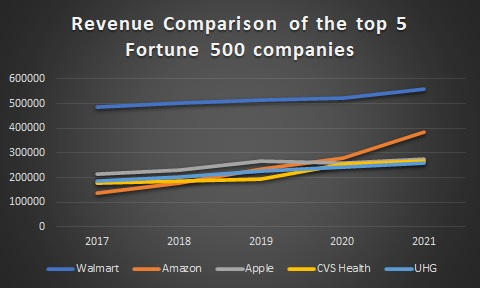
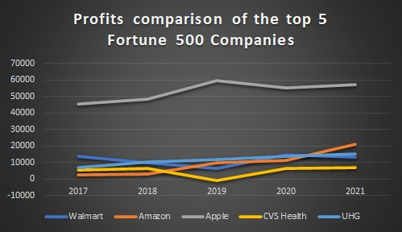
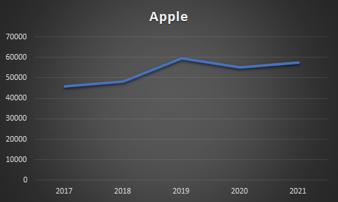
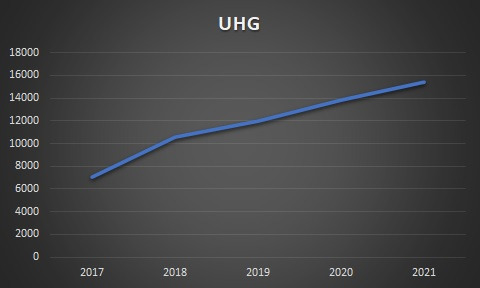

Business acumen and business success go hand in hand. Employees and workplace culture have an integral role in taking
the company to new heights. Sound employees make a sound company. But in this fast paced life where everyday there are new
challenges and hurdles, it is easy to get lost.
So how do some companies climb the ladder of success while others stumble?
We are in an age where things are moving really fast. And keeping up with changing times has become a necessity. Heraclitus once
said that "Change is the only constant in life". It means that the world is always changing and so are people. So how do we cope
up with ever changing times. "Be slow in choosing, but slower in changing" is the answer.
Versatility, adaptability and hard work should be the core qualities that one should focus on. And the changing process should be
done step by step. Even though it might take time, it would prevent cognitive draining.
This article focuses on the leading five(2021) of the 500 companies contributing to the economic growth of America. It highlights the profits
earned in a span of 5 years. And concludes on the reasons that might have lead to the climb or stumble.
Revenue Comparison

The leading 5 companies of 2021 based on the revenue, according to Fortune 500 are Walmart, Amazon, Apple, CVS
Health and UHG. They belong to the commercial, tech and health sectors. There was a steady rise in the revenue for
the ecommerce companies like Walmart and Amazon as well as the health sector companies like CVS health and UHG.
Meanwhile, there was a dip in the revenue for Apple in the year 2020. Even though these companies were climbing
the ladder of success, many of the other companies were going bankrupt. The years 2019, 2020 and 2021 were disastrous
for most of the sectors. The global economy was plunged into recession caused by the COVID-19 pandemic. The entire
world was facing a treacherous financial crisis. The unemplyment rate had increased by a substantial amount. But
these companies withstood the crisis.
Revenue(in $M)
2017
2018
2019
2020
2021
Walmart
485873
500343
514405
523964
559151
Amazon
135987
177866
232887
280522
386064
Apple
215639
229234
265595
260174
274515
CVS Health
177526
184765
194579
256776
268706
UHG
184840
201159
226247
242155
257141
Profits Comparison

The graph depicts the profits earned by the 5 leading companies of 2021 for the past 5 years. There have been
ups and downs in terms of the profits earned. Amazon and UHG are the only companies with a steady increase in the
profits. Among these five companies, Apple is consistent in terms of the largest profit in the five years being
considered. And only CVS Health showed a negative profit in the year 2019.
Profits(in $M)
2017
2018
2019
2020
2021
Walmart
13643
9862
6670
14881
13510
Amazon
2371
3033
10073
11588
21331
Apple
45687
48351
59531
55256
57411
CVS Health
5317
6622
-594
6634
7179
UHG
7017
10558
11986
13839
15403
Walmart Fiscal Analysis
Profit turnover of Walmart ($M)
Doug McMillon, the CEO of Walmart, once said, "Its really simple. If you are not meeting the needs and wants of
the customer, you're done. There's not a lot of loyalty here." Loyalty is the key to success in the e-commerce field.
You have to win the trust of the customer. And Walmart has proven it. It focuses on five pillars which are
employees, customers, business partners, managing financial metrics and driving future performance. And as a result it
has been on the number one spot from 2017 to 2021 consistently. Even though there had been threats with online shopping
becoming popular, the changes brought about in the company has saved it from going closing down and has pushed it towards
new heights. Walmart has changed, adapted and continues to transform, says the CEO. It is transforming itself from a
tradional retail company to a technology and an innovation company. Digital transformation and innovative ideas introduced
have enabled it to climb up. One such idea is the Open Call event for the US manufactured products. "The plan of this event was
to unite key stakeholders in specific region of the country to identify and overcome top-down barriers to US
production"-Business wire. Because the US manufacturing and small businesses were getting affected due to multinational
retail corporation company like Walmart, introduction of the One Call event and supporting the innovative ideas put
forward by the small businesses was a huge step taken by Walmart to unite for a better America. The intention was to boost job creation
and US manufacturing. The goal was to become the most trusted retailer in a way that creates value for business and society.
“At Walmart, we believe strengthening societal systems is not only the responsible thing to do, it also maximizes business value,”
said Kathleen McLaughlin, president of the Walmart Foundation and chief sustainability officer for Walmart. “Through our initiatives,
we hope to accelerate progress and spark collective action on the issues that matter most to our customers, business and communities
– helping to transform retail and retail supply chains for economic, environmental and social sustainability.”
Amazon Fiscal Analysis
Profit turnover of Amazon ($M)
Amazon has a vision. And that is to be earth's most customer centric company. To build a place where people can come to find and
discover anything they might want to buy online. And how would they achieve this? They have set for themselves certain values
which they have to abide by. They are :
Customer Obsession
Amazon is an ecommerc giant and a multinational technology company. Just like any other ecommerce company, at amazon, customer
satisfaction is of utmost importance. Put the customers first and foremost is the motto. Better the customer experience, better
the traffic. More the traffic means more sellers and more the sellers means more product selection and that would ultimately lead
to better customer experience. This concept is known as Amazon flywheel. Amazon’s success is built on serving the customer and
the customer only.
Ownership
Taking ownership should be ingrained in the employees. There are two ways to define this concept. The first is, to be good at your
work and take up responsibiities. And the second is, to be accountable for your work. The ultimate goal is the company's success.
Invent and Simplify
"If you double the number of experiments you do per year you’re going to double your inventiveness.” – Jeff Bezos. Passion,
innovation and creativity leads to better inventions. And better inventions would simplify life which is what we
all seek leading to more and more customer attraction.
Learn and be curious
Learning leads to curiosity and curiosity leads to learning. And the cycle continues on. The more you learn, the more you start
to think openly which would to lead to innovation and creativity.
Hire the best
Jeff Bezoz, the CEO of Amazon believes that life is too short to hang out with people who aren't resourceful.
“During our hiring meetings, we ask people to consider three questions before making a decision. Will you admire
this person? Will this person raise the average level of effectiveness of the group they’re entering? Along what
dimension might this person be a superstar?”
One of the major threats that Amazon faced in the 2010's was overseas expansion. The problems that they were facing did not
have any textbook solutions. And they ended up solving these problems by inventing new ideas.
Apple Fiscal Analysis

Profit turnover of Apple ($M)
In the tech world, Apple is the most reonowned company. Apple has a reputation of delivering high end products which are at the same
time simpistic. It's products are worldwide popular. Ipod, Iphone and Ipad owe their success to their features as well as the marketing
strategy employed. As any other company engaged in product marketing, Apple also follows the same basic principles for sales. That being,
higher the customer satisfaction, higher the sales. In order to achieve this, they have employed several methods. The first one being
better communication with the customers. And they do it using the Golden Circle Marketing Strategy. The aim being to convey the message
to the customers. The message being : The answers to : Why? How? and What? Why do they do what they do? How do they do what they do? And
lastly What they do? These basic questions gives the company a purpose. And a purpose driven company leaves no stones unturned to achieve
success. Whatever be the hurdles, they would find solutions. And Apple is a great example of this. One of the setback that Apple faced
was the cancellation of AirPower, a wireless charging pad after 18 months of its announcement. Even though Apple faced a lot of criticism
for announcing a product that never hit the racks and that too for the first time, they kept the reputation of not delivering a low end
product. They had ventured into a new area but were unsuceessful. They gave a statement that they continue to believe that the future is
wireless and are committed to push the wireless experience forward. After approximately an year, Apple unveiled a new wireless charging
pad MagSafe Duo. It remains to see if the new product would meet the high standards set by the company. At the same time, consideration
should be given to the point that they wouldn't have unveiled it if they hadn't found solutions to the issues that existed with AirPower.
The second marketing strategy is to target the early adopters who are the risk takers and trend setters. They have managed pretty well in
this aspect considering the revenue growth and the profit turnover. The third marketting strategy is to keep in mind about the customer
needs. Apple is pretty much adapted to the concept of everchanging times. And the customer needs also vary with time. Thus they focus on
making the customers change their preferences to better and innovative apple products. Furthermore, they are well adept in selling their
products.
CVS Health Fiscal Analysis
Profit turnover of CVS Health ($M)
CVS Health is a health solution company. It makes it easier to access care. Their motto is healthier happens together.
Kevin Hourican, executive vice president of CVS Health and president of CVS pharmacy said, "If you’re not constantly
innovating your own business, someone else will be innovating the business you’re in and taking the consumer you’re
attempting to serve from you. You must have a constant stream of innovation of services that are customer-focused, solving
unmet needs or reducing friction in how the consumer interacts with you." Their success is because of purpose driven leadership,
big picture innovation and omni channel convenience. “Unless we’re bringing forward solutions that solve customer problems,
we become stale” said Kevin Hourican. It is a customer driven establishment. And at the same time, they are risk takers which is
depicted by the dip in the profit in the year 2019. The reason - they took a decision to transform the consumer health experience
by bringing together capabilities of two leading organizations to establish innovative health care model. They spent $69 billion
to have a merger with Aetna. The goal was to have a new store concept with expanded healthcare facilities. Even though their profit
declined, it did not have any effect in the following years.
UHG Fiscal Analysis

Profit turnover of UHG ($M)
The primary challenge that the health sector faces today is that the best healthcare facilities are not accessible for many.
Cost effectiveness and efficiency is what everyone in the health care sector hope to achieve. So what has UHG done in this aspect?
What makes it different from the other companies? UnitedHealth Group generates revenue from a variety of sources, including premiums
on risk-based products, fees from various services, sales on healthcare products, and services and investment. The primary area of
focus of UHG is insurance and healthcare. Having a health insurance is a relief for customers in case of emergencies. Even though the cost
of insurance is less when compared to the healthcare facilities provided, it is the healthy people who pay for the sick people (the
people being considered here are the ones who have paid for the insurance). This is the business model that UHG as an insurer follows.
But due to the everchanging policies(for example the Affordable Care Act(ACA)), the business model also has to be changed. This is one
of the challenges that UHG faces as an insurer. It had stopped selling individual insurances because it was not able to incur the costs
of the rising uninsured Americans. But after the COVID-19 crisis, they began to look at participitating in more exchanges. And for that
they are going through market-by-market, evaluating the relative efficiency of their network, their ability to compete and states in
America where they would like to extend Medicaid. This is the reflection of their philanthropic nature. The core values of UHG are integrity,
compassion, relationship, innovation and performance. And their mission is helping people live healthier life and helping make health system
work better for everyone. In order to achieve this end, they have utilised the developments made by the progressing times that is they have
harnessed new technologies for better patient care.